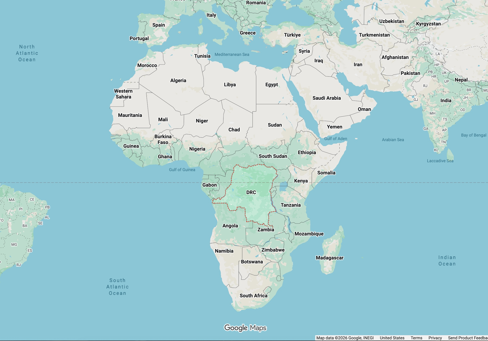

The Democratic Republic of the Congo (DRC) is a vibrant country located in Central Africa. It is the second-largest country in Africa by land area and is known for its incredible biodiversity, immense mineral wealth, and rich cultural heritage.
Situated right on the equator in Central Africa, the DRC is surrounded by nine countries, including Angola, Zambia, Rwanda, and the Republic of the Congo. It also has a tiny 25-mile stretch of Atlantic coastline on its western tip.
